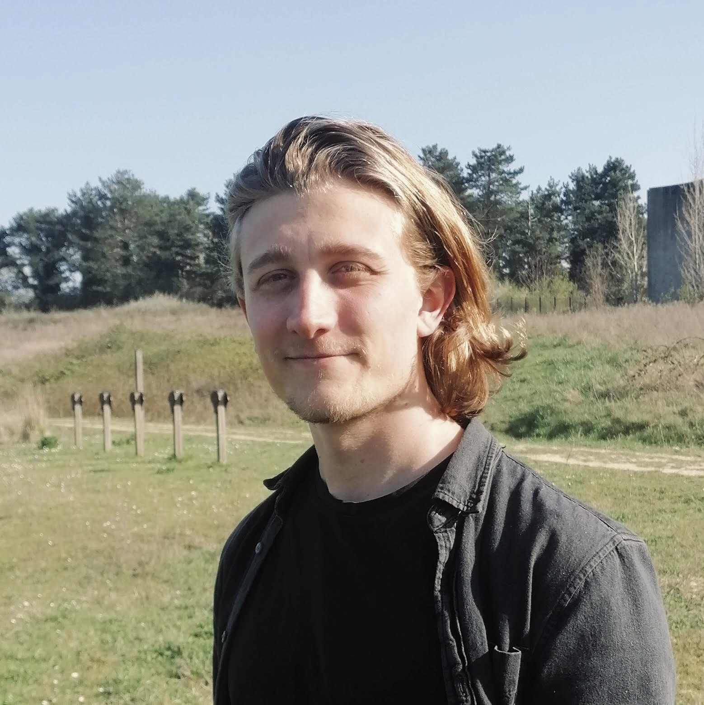

I am currently a PhD sudent in the MERGE team at Ecole Polytechnique CMAP under the supervision of Marie Doumic and Sylvie Méléard , and in collaboration with Meriem El Karoui . My PhD focuses on the understanding of the coordination of the DNA replication and division cycles in Escherichia coli, through mathematical modelling and statistical analysis.